RTTY pro macOS
RYRY (dříve mmtty4mac) je nativní přepis programu MMTTY (JE3HHT) pro Mac. Používá stejný osvědčený demodulátor a přidává log, podporu závodů, ovládání rádia přes USB a API pro loggery.
- demodulátor MMTTY
- AFSK i FSK
- CAT Icom / Yaesu / Kenwood / Elecraft + hamlib
- log ADIF, Cabrillo
- 9 předvoleb závodů, WAE QTC
- API kompatibilní s fldigi
- čeština / English

1. Instalace
- Nainstalujte RYRY z Mac App Store (zdarma). Aktualizace přicházejí přes App Store.
- Při prvním spuštění se RYRY zeptá na složku pro log (dialog se otevře ve složce Dokumenty) – klikněte na Povolit přístup a RYRY si v ní založí složku
RYRY. macOS pustí aplikaci do složky až po tom, co ji vyberete; RYRY si přístup zapamatuje. Když dialog zrušíte, log zůstane v kontejneru aplikace a stavový řádek řekne kde. - macOS se zeptá na přístup k mikrofonu – potvrďte ho, jinak příjem nefunguje. Změnit to jde v Nastavení systému → Soukromí a zabezpečení → Mikrofon.
- Nemáte po ruce rádio? Nápověda → Přehrát ukázkový signál přehraje krátké závodní spojení a uvidíte, jak RYRY dekóduje.
- Tuto příručku otevřete kdykoli z aplikace: menu Nápověda → Příručka RYRY (⌘?).
Přecházíte z mmtty4mac? Nastavení se při prvním spuštění přenese samo; RYRY se jednou zeptá na složku s logem (obvykle ~/Documents/mmtty4mac) a hesla online služeb bude možná potřeba zadat znovu.
Volitelně: pro rádia, která vestavěný CAT nezná, nainstalujte hamlib příkazem brew install hamlib a rigctld spusťte sami (viz Ovládání rádia).
2. První nastavení
Nastavení otevřete klávesou ⌘,. Změny se projeví tlačítkem Použít (restartuje zvuk, rig a API); parametry modemu a jazyk platí hned.
Stanice
Vaše značka se posílá v makrech (%m) a podle ní aplikace určí vaši CQ zónu a kontinent (pro závody a QTC).

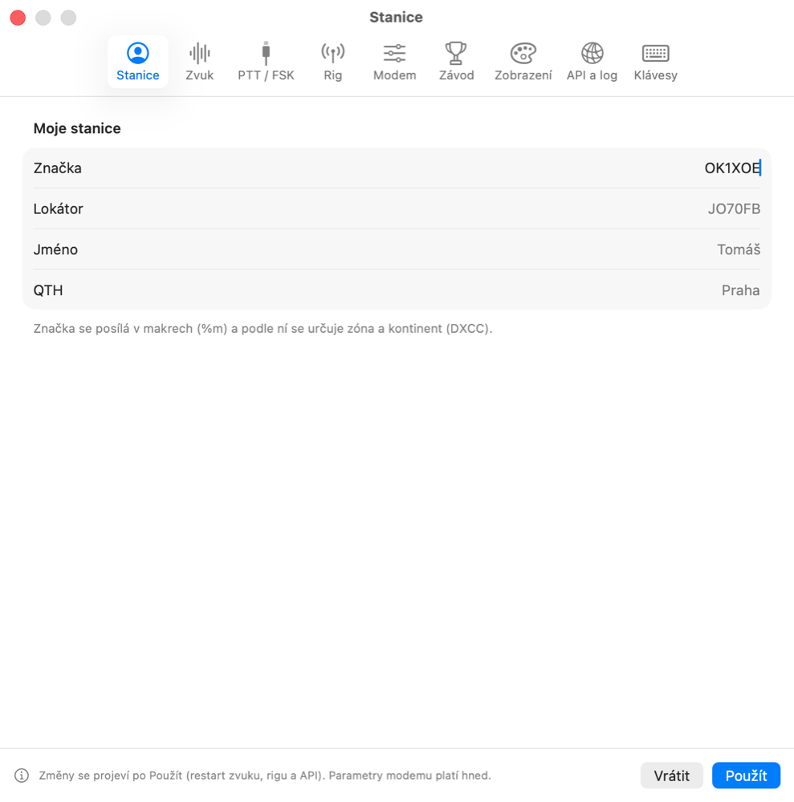
Zvuk
Jako vstup i výstup zvolte zvukovou kartu rádia (typicky „USB Audio CODEC“). Hlasitost vysílání nastavte tak, aby ALC rádia jen lehce reagovalo. Kalibrace hodin změří skutečnou vzorkovací frekvenci zvukovky – u levných zvukovek zlepší dekódování.

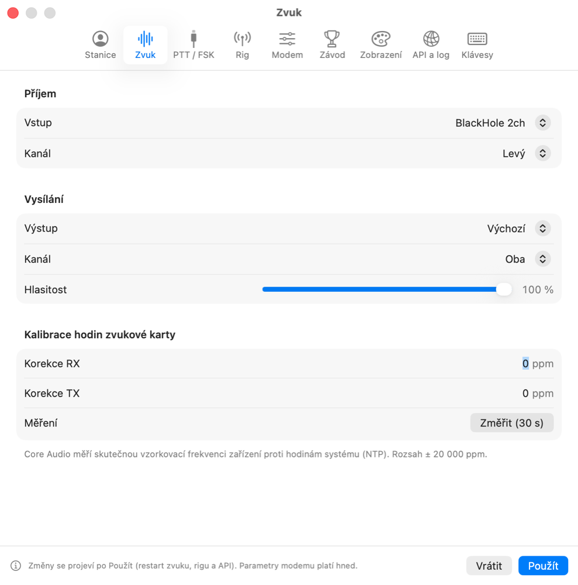
PTT / FSK
Jak se klíčuje vysílač: CAT (příkazem rádiu), RTS/DTR sériového portu, nebo VOX. AFSK = RTTY zvukem (rádio v SSB/DATA), FSK = klíčování sériovou linkou (rádio v režimu RTTY/FSK). Časování (zpoždění TX, doběh PTT) a bezpečnostní časovač, který vysílání vypne při zaseknutí.

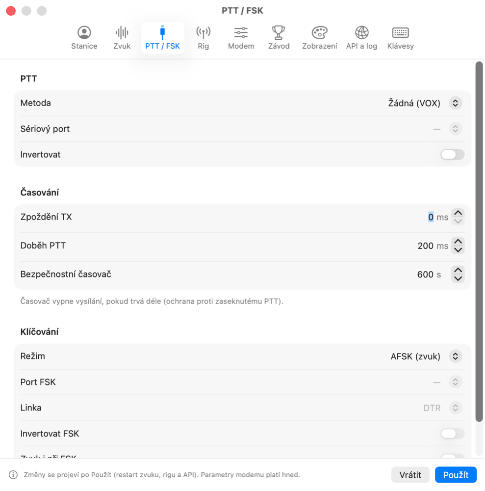
Modem
Parametry demodulátoru, filtrů, AFC a vysílání. Výchozí hodnoty odpovídají MMTTY; mění se hned, bez tlačítka Použít.

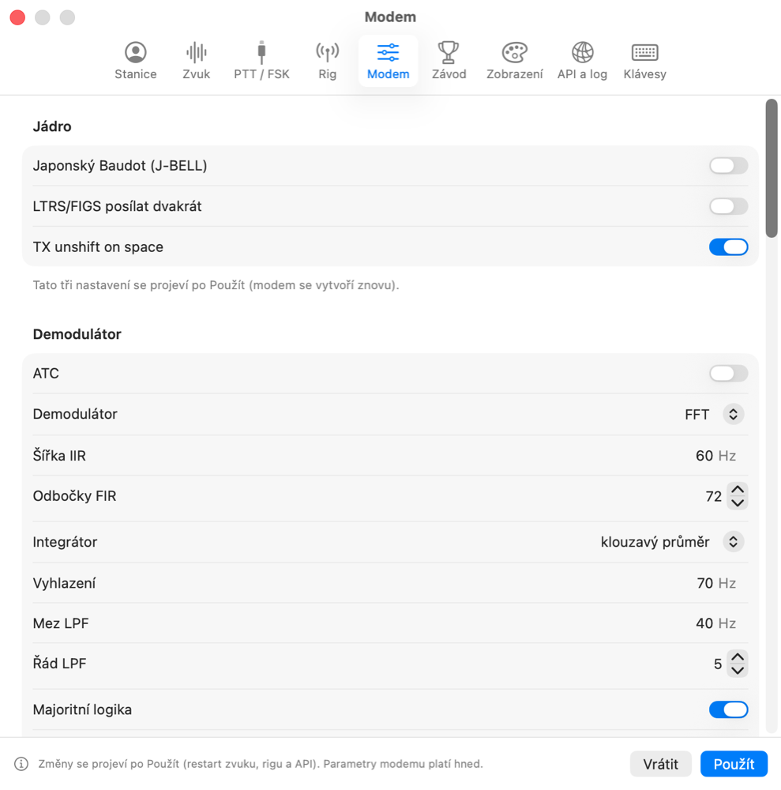
3. Ovládání rádia (CAT)
V záložce Rig vyberte způsob ovládání:
- CAT přes USB (vestavěný) – bez dalších programů. Protokoly Icom CI-V (IC-7300, 7610, 705, 9700…; výběr modelu nastaví adresu CI-V), Yaesu (FT-991, FTDX10/101, FT-710), Kenwood (TS-590, TS-890) a Elecraft (K3, K4, KX3). Aplikace čte a nastavuje frekvenci a mód a ovládá PTT.
- hamlib rigctld (síť) a flrig – pro ostatní rádia: připojení k běžícímu programu. rigctld spusťte sami, např.
rigctld -m <model> -r /dev/cu.X -s <rychlost>(rigctld -lvypíše modely). Verze z App Store ho neumí spustit sama.

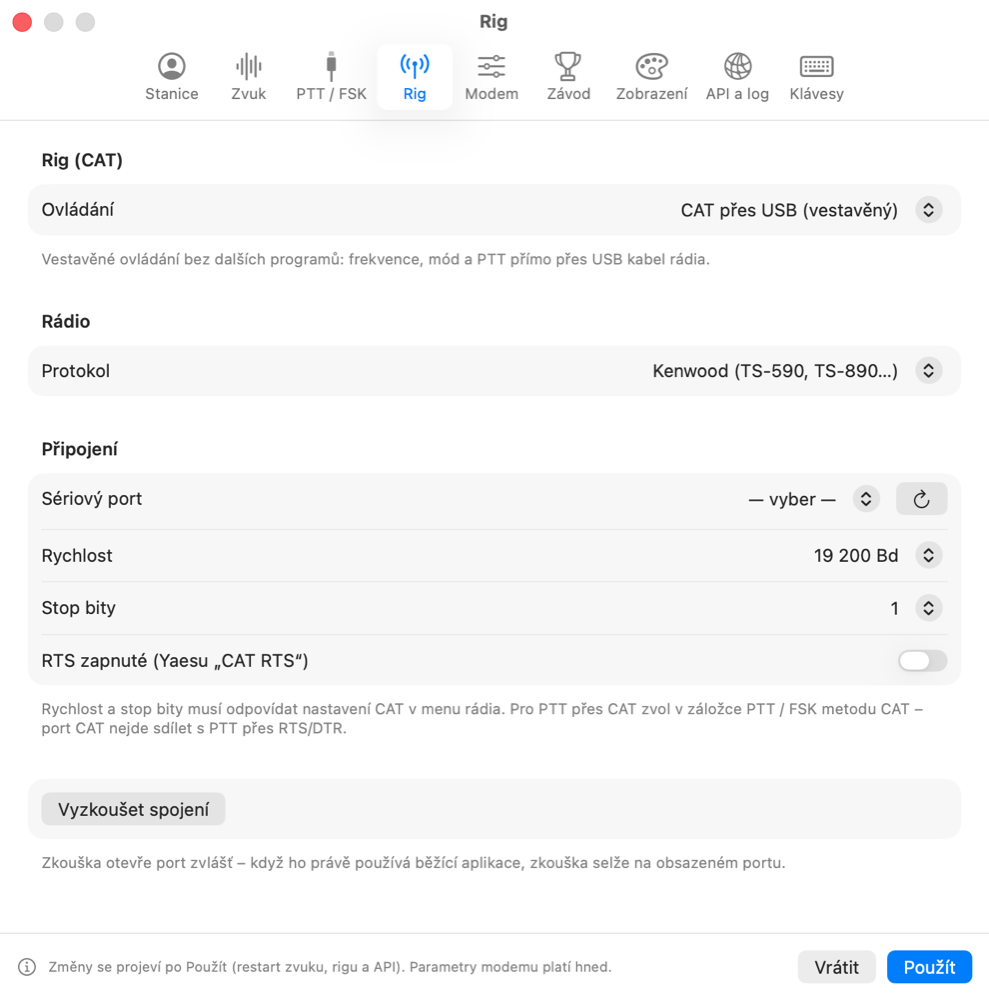
4. Příjem
- Naladění: klik do spektra nebo vodopádu naladí mark; space je o shift výš. HAM nastaví shift 170 Hz.
- Kolečko myši nad vodopádem mění úroveň squelche, pravé tlačítko vloží zářez (notch) proti rušení.
- AFC doladí signál (pravé tlačítko: jen při otevřeném squelchi, omezení rozsahu), NET vysílá na kmitočtu příjmu, REV prohodí mark a space, ATC a SQ jako v MMTTY.
- Filtry (menu vedle Shift): BPF, AA6YQ, notch/LMS, UOS. XY zapne křížový indikátor ladění.
- Zvýraznění značek: v přijatém textu je vaše značka červeně, stanice už v logu modře, nová tučně a duplicita přeškrtnutě. Když vás někdo volá, ozve se zvuk (volitelně i oznámení).
- Hlídání: v Nastavení → Spoty lze hlídat vybrané značky a nové země (na pásmu nebo vůbec) ve spotech i v příjmu.
- Klik na slovo v přijatém textu ho vloží do QSO okna – značku, RST, číslo, jméno podle typu slova.
Druhý dekodér a vícekanálové dekódování
- Druhý dekodér (přepínač „2. dek.“ v horní liště) přijímá stejný signál jiným demodulátorem a jeho text ukazuje v panelu pod příjmem. Slabý nebo rušený signál tak často přečte jeden z nich – podobně jako se v závodech používá 2Tone vedle MMTTY.
- Vícekanálové dekódování (menu Okno → Kanály) samo najde RTTY signály ve vodopádu a každý dekóduje zvlášť (až 8 kanálů). Tlačítko Naladit přeladí hlavní dekodér na vybraný signál. Nastavení: Nastavení → Dekodéry.

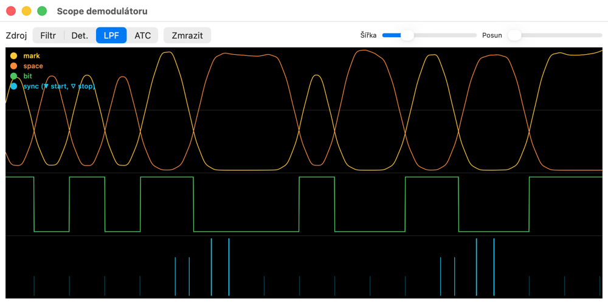
5. Vysílání a makra
- TX / RX: tlačítko TX nebo ⌘T. Esc = okamžitě RX. Tune = nosná pro ladění.
- Okno vysílání: odesílá po znacích, slovech nebo řádcích; Odeslat vše odešle celý text.
- Makra F1–F12 a ⇧F1–⇧F4: klik nebo klávesa; pravým tlačítkem Upravit… (název, text, barva, opakování).
- Sady maker: přepínač Běžný provoz / DX nad lištou maker; v závodě má každý závod svou sadu, která se mění sama se zvoleným závodem. Výchozí makra… nahradí sadu výchozí (u závodu podle jeho výměny).
- Zprávy: delší uložené texty (popis stanice, rozlučka) v menu Zprávy.
- Odeslat textový soubor najdete v menu Vysílání.
| Proměnná | Význam | Proměnná | Význam |
|---|---|---|---|
%m | moje značka | %c | značka protistanice |
%n | jméno protistanice | %q | QTH protistanice |
%r / %s | RST odeslané / přijaté | %N / %M | odesílaná výměna závodu bez RST (001, BHE, 015 TOMAS DX) / přijatá |
%S / %X | moje číslo / text výměny | ||
%a %o %Z | moje jméno, lokátor, CQ zóna | %x %y | číslo a čas (BARTG) |
%g | pozdrav GM/GA/GE podle místního času protistanice | %D %T %t | datum a čas UTC |
%L %F | LTRS / FIGS | %{…} | CW identifikace |
%l | zalogovat spojení | \ / # na konci | po odvysílání RX / zůstat v TX |
Příklad makra „Answer“: %c %c DE %m %m %m K\
6. QSO a log
QSO okno ukazuje jen pole, která aktuální režim potřebuje. Pod značkou je země DXCC (z cty.dat), CQ a ITU zóna, místní čas protistanice a seznam předchozích spojení. Log (⌘L) zapíše spojení, Clear okno vyprázdní.
Pásmo bez rigu, návrhy značek, callbook
- Pásmo: bez připojeného rigu vyberte pod poli QSO pásmo nebo zadejte frekvenci v kHz – zapíše se do logu a zůstane i pro další spojení. S rigem se frekvence bere z rádia.
- Super Check Partial: při psaní značky se pod polem Call nabízejí známé značky (z MASTER.SCP a z vašeho logu); „≈“ označuje značky lišící se o jeden znak – pomohou opravit chybně přijatou značku. MASTER.SCP stáhnete v Nastavení → Závod.
- Směr antény: pod zemí je azimut a vzdálenost k protistanici (z lokátoru, jinak podle země) i dlouhou cestou.
- Frekvence: kliknutím na frekvenci v horní liště (nebo ⌥⌘F) zadáte kmitočet nebo zvolíte pásmo – rig se přeladí (během vysílání ne).
- Callbook: po zadání značky se z QRZ.com nebo HamQTH doplní jméno, QTH a lokátor (Nastavení → API a log → Callbook; heslo je v Klíčence).

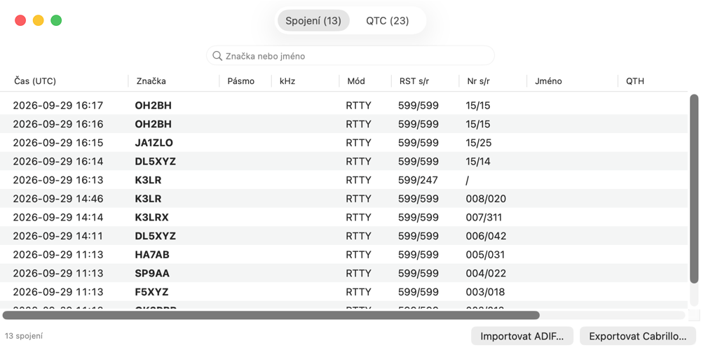
Zálohy: log se jednou denně zálohuje do složky backup vedle logu (posledních 10 záloh); ručně Soubor → Zálohovat log teď. Import z MMTTY: Soubor → Importovat z MMTTY… načte makra, zprávy, značku, parametry modemu a klávesové zkratky ze souboru Mmtty.ini z Windows; před importem ukáže náhled a co přepíše.
Log se ukládá do složky z Nastavení → API a log (výchozí ~/Documents/RYRY; log z mmtty4mac zůstává v ~/Documents/mmtty4mac) jako JSONL a zároveň jako ADIF (mmtty4mac.adi), který přečte každý logger. Když otevřete nebo založíte log v jiné složce, RYRY se jednou zeptá na přístup k ní. Starý log z MMTTY v MMTTY exportujte do ADIF a v RYRY importujte – duplicity se přeskočí.
Správa logu
Každý log je samostatný soubor – třeba jeden pro běžný provoz a jeden pro každý závod. V menu Soubor:
| Příkaz | Co dělá |
|---|---|
| Nový log… ⌘N | založí prázdný log se zvoleným názvem a umístěním; pořadová čísla závodu začnou od 1 |
| Otevřít log… ⌘O | otevře log RYRY nebo ADIF z jiného programu (ten se převede, originál zůstane jako .adi.orig) |
| Otevřít nedávný log | posledních 8 logů |
| Uložit log jako… ⇧⌘S | uloží kopii pod jiným názvem a dál se pracuje v ní |
| Exportovat ADIF… | kopie ADIF jinam, log zůstane otevřený |
| Importovat ADIF… | přidá spojení z ADIF do otevřeného logu (duplicity se přeskočí) |
Každé spojení se ukládá hned při zalogování, samostatné „Uložit“ proto není potřeba. Název otevřeného logu je v titulku okna Log.
7. Závody a QTC
V záložce Závod zapněte závodní režim a vyberte předvolbu – 28 RTTY závodů z kalendáře contestcalendar.com: SARTG New Year, ARRL RTTY Roundup, PRO Digi, BARTG RTTY Sprint, Mexico RTTY, CQ WPX RTTY, NAQP RTTY, North American Sprint RTTY, YB DX RTTY, BARTG HF RTTY, EA RTTY, IG-RY WW RTTY, BARTG Sprint 75, SP DX RTTY, VOLTA WW RTTY, SARTG WW RTTY, ARRL Rookie Roundup RTTY, Russian WW RTTY, CQ WW RTTY, URC DX RTTY, Russian WW Digital, Makrothen RTTY, DARC RTTY Sprint, JARL WW RTTY (dříve JARTS), WAE DX Contest RTTY, TRC DIGI, OK DX RTTY Contest a týdenní Weekly RTTY Test (WRT). Předvolba nastaví název pro Cabrillo, formát výměny, nejbližší termín, který ještě neskončil (i právě běžící závod), a odesílanou výměnu podle Stanice (např. teritorium URC z prefixu: OK1 = BHE, OK2 = MOR). Pod předvolbou je sekce Pravidla závodu: termín, pásma, co se předává, body, násobiče, duplicity, odkaz na oficiální pravidla a oranžově nejasná místa pravidel. Termín vždy ověřte v pravidlech.

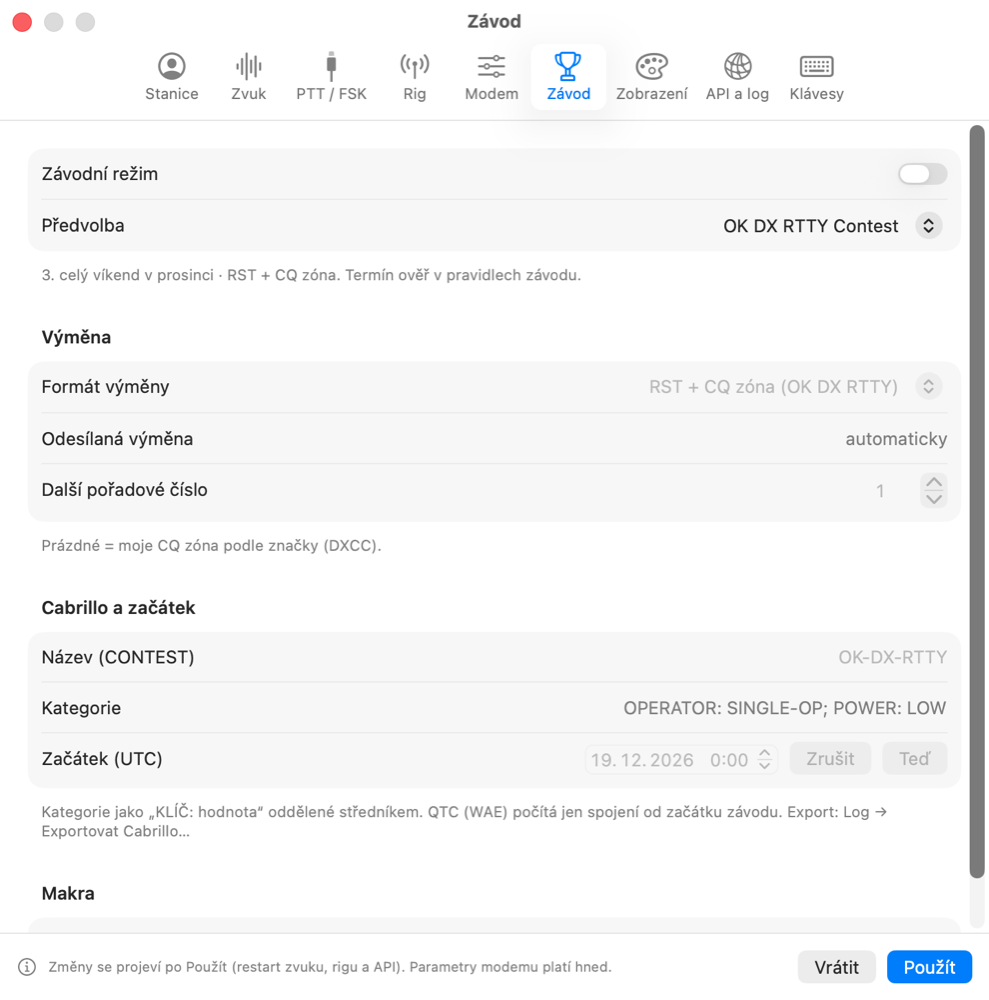

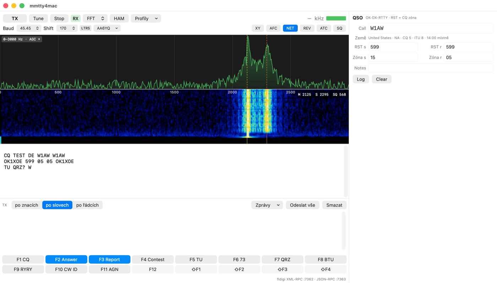
Duplicity: když se stanicí už máte v tomto závodě spojení na stejném pásmu (Russian WW Digital, PRO Digi a vlastní závod: na pásmu a módu), zobrazí se u značky červené DUPE. Zalogovat lze i tak.
Formáty výměny: RST + pořadové číslo (nebo pevná výměna), RST + číslo + text (jméno, QTH, CQ zóna, značka člena), RST + text bez čísla (teritorium, jméno + QTH, rok licence), RST + CQ zóna, CQ/RJ (zóna + QTH), BARTG (číslo + čas), WAE (číslo + QTC), PED. Kde část stanic posílá místo čísla kód (ARRL RU – stát, ruské závody – oblast, DARC – DOK, Mexico – stát, EA – provincie, SP DX – powiat), má QSO okno pole čísla i kódu a stačí vyplnit jedno. Pořadová čísla se po zalogování zvyšují sama. Okna Násobiče a Skóre počítají podle pravidel zvoleného závodu.
ESM – Enter posílá zprávy (Run / S&P)
Po zapnutí v Nastavení → Závod → ESM pošle Enter v poli Call nebo výměny makro podle stavu spojení, podobně jako v N1MM: Run (voláte CQ) – CQ → výměna → TU a zalogování; S&P (odpovídáte) – moje značka → výměna a zalogování. Režim přepnete v hlavičce QSO panelu nebo ⌃R; panel ukazuje, co Enter pošle. Během vysílání Enter nic neposílá a prázdné makro se nikdy neodešle.
Rychlost: ve stavovém řádku je v závodě počet spojení a rychlost za posledních 10 a 60 minut (spojení za hodinu); v okně Log jsou počty podle pásem.
Skóre
Okno Okno → Skóre ukazuje pro zvolenou předvolbu počet spojení, duplicit, bodů a násobičů po pásmech a celkem, a výsledné skóre i s výpočtem (např. „Body 120 × násobiče 35 = 4 200“). Aktualizuje se s každým zalogovaným, opraveným nebo smazaným spojením; skóre je vidět i ve stavovém řádku. Jde o odhad – vyhodnocení závodu odečte chybná a nepotvrzená spojení. Pravidla, která nešlo ověřit, okno označí.

Násobiče a band mapa
Okno Okno → Násobiče ukazuje u zvolené předvolby odpracované násobiče po pásmech (země DXCC, CQ zóny, prefixy WPX, státy a provincie, oblasti…) a u konečných množin i chybějící. U zadané značky se v QSO okně objeví zelené NEW MULT. Pravidla, která nešlo ověřit v oficiálních pravidlech závodu, jsou v okně označena. Okno → Band mapa ukazuje RTTY část pásma se spoty podle frekvence a naladěním rigu; klik na spot naladí rig a vloží značku. Pásmo se volí samo podle rigu, frekvence v QSO okně nebo podle toho, kde je nejvíc spotů; ručně ho vyberete v rozbalovacím seznamu. Stupnice pokrývá celé pásmo (mapa se otevře na digitální části, kde bývá RTTY). Kolečkem myši ji posunete, se Shiftem přiblížíte nebo oddálíte; totéž umí lupy a tažení myší, tlačítko ⤢ zobrazí celé pásmo.
Historie značek: soubor ve formátu N1MM Call History (Nastavení → Závod) předvyplní jméno, lokátor a výměnu protistanice (např. zónu).
WAE a QTC
Ve formátu WAE je v QSO okně panel QTC: QTC? se zeptá protistanice, QRV – přijmout otevře příjem série, Poslat… připraví a odvysílá sérii z vašeho logu. Aplikace hlídá pravidla – nejvýše 10 QTC na dvojici stanic, jen mezi kontinenty, každé spojení jen jednou. Přijaté řádky se plní klikem na slova nebo tlačítkem Načíst z příjmu.
8. Soubory a WAV
| Menu Soubor | Co dělá |
|---|---|
| Uložit příjem do souboru… | uloží obsah okna příjmu |
| Průběžně zapisovat příjem do souboru | denní soubory rx-RRRR-MM-DD.txt ve složce rx pod adresářem logu, volitelně s časem UTC |
| Přehrát WAV do příjmu | reálný čas, 4× nebo co nejrychleji; v horní liště pauza, posun a převinutí |
| Nahrávat příjem do WAV… | nahrávání ukazuje červené „REC“, kliknutím se zastaví |
| Importovat ADIF… | spojení z jiného programu (duplicity se přeskočí) |
| Nastavení zvuku systému…, Audio MIDI Setup… | úroveň a formát zvukovky |
9. API pro loggery
RYRY se loggerům představuje jako fldigi (XML-RPC na portu 7362), takže ho ovládají například RUMlogNG nebo MacLoggerDX – v loggeru zvolte „fldigi“. Druhé API je JSON-RPC přes WebSocket (ws://127.0.0.1:7363/v1) s událostmi o přijatém textu, stavu a zalogovaných spojeních; Java klient je v clients/java.

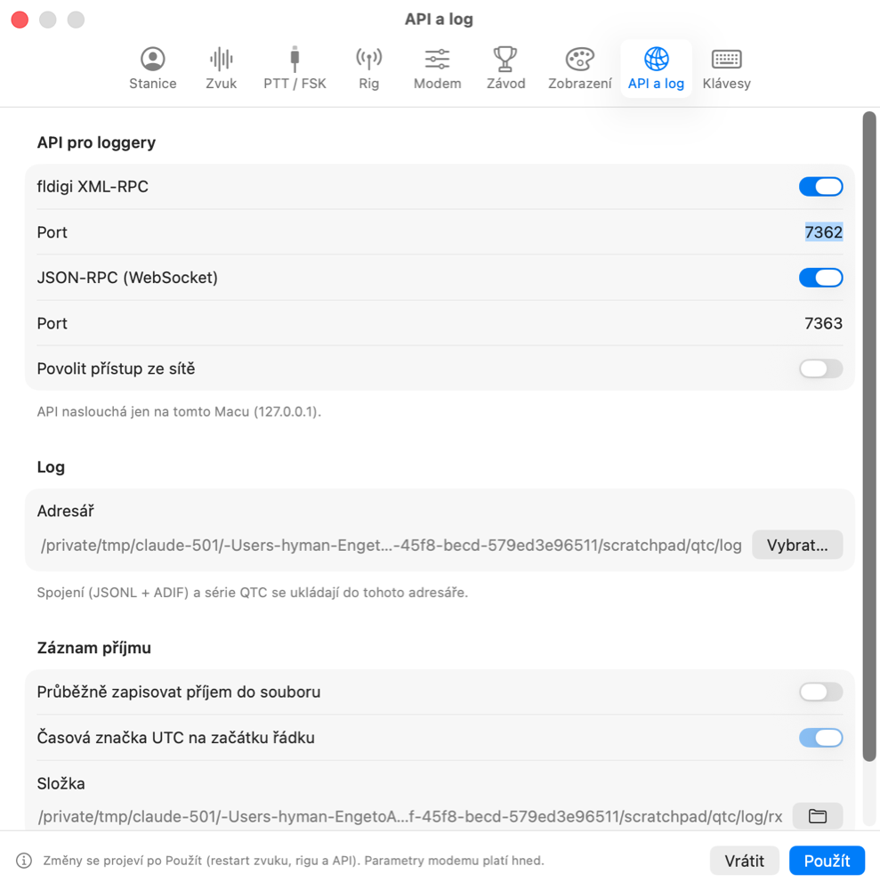
10. Online služby
Všechny služby jsou ve výchozím stavu vypnuté a na internet se připojují jen po zapnutí. Hesla a klíče se ukládají do Klíčenky macOS.
| Služba | Kde zapnout | Co dělá |
|---|---|---|
| Callbook (QRZ.com, HamQTH) | Nastavení → API a log | doplní jméno, QTH a lokátor protistanice |
| DX cluster a RBN | Nastavení → Spoty, okno Okno → Spoty | seznam RTTY spotů; dvojklik naladí rig a vloží značku (posun frekvence pro LSB/AFSK nastavíte); spoty v propustném pásmu se zobrazí jako štítky přímo ve vodopádu (zelená = nová stanice, oranžová = v logu, červená = duplicita), klik naladí mark |
| Příkazy pro DX cluster | okno Okno → Spoty (dole) | 10 tlačítek s příkazy (např. sh/dx 30, sh/wwv, set/skimmer) a řádek pro ruční příkaz s historií (šipky ↑↓); odpovědi clusteru jsou v rozbalovací konzoli. Pravé tlačítko myši upraví příkaz stejným editorem jako makra pro vysílání; %k = frekvence rigu v kHz, %c = protistanice (např. dx %k %c RTTY) |
| LoTW, eQSL, Club Log | Nastavení → Online, okno Log → Nahrát | nahraje dosud nenahraná spojení – eQSL a Club Log přímo (volitelně automaticky po zalogování); pro LoTW RYRY uloží ADIF do Stažených souborů a otevře ho v TrustedQSL, kde ho podepíšete a odešlete, pak odeslání potvrdíte v RYRY |
11. Zobrazení, jazyk, klávesy

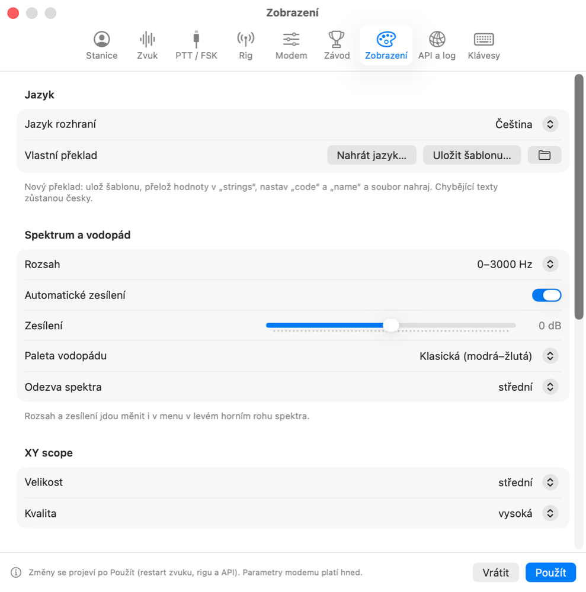

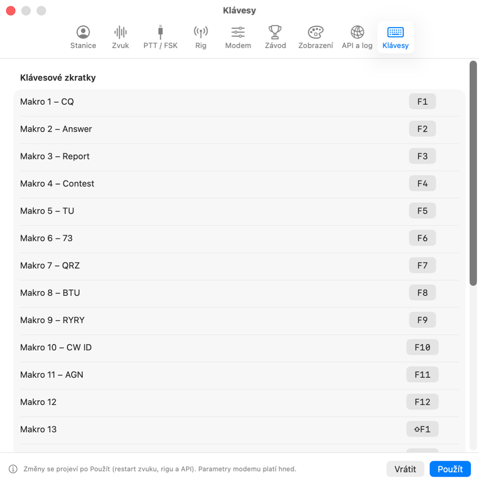
Ve výchozím stavu je rozhraní anglicky; češtinu zvolíte v Nastavení → Zobrazení → Jazyk rozhraní (volba se pamatuje).
Jazykové soubory cs.json a en.json najdete ve složce ~/Library/Containers/cz.ok1xoe.ryry/Data/Library/Application Support/RYRY/Languages – aplikace běží v sandboxu macOS (tlačítko se složkou v sekci Jazyk). Můžete je upravit – uložená změna se projeví okamžitě ve všech oknech. Upravený soubor aplikace při aktualizaci nepřepíše a texty, které v něm chybějí, doplní z přibalené verze.
Vlastní překlad: v sekci Jazyk zvolte Uložit šablonu…, přeložte hodnoty v strings, nastavte code a name a soubor nahrajte tlačítkem Nahrát jazyk…. Jazyk se přepne hned ve všech oknech.
12. Když něco nefunguje
| Problém | Řešení |
|---|---|
| Vodopád je prázdný | Zkontrolujte vstup v Nastavení → Zvuk a povolení mikrofonu. |
| Text se nedekóduje | Mark na žluté čáře, shift 170 Hz, 45,45 Bd; zkuste REV. |
| Rádio nevysílá | Metoda PTT v záložce PTT / FSK; u CAT zkuste „Vyzkoušet spojení“ v záložce Rig. |
| Rig offline | Port a rychlost musí odpovídat menu rádia a port nesmí mít otevřený jiný program. |
| Vysílání je zkreslené | Snižte hlasitost vysílání (Nastavení → Zvuk) a sledujte ALC rádia. |
| Logger se nepřipojí | Nastavení → API a log: fldigi XML-RPC zapnuté, port 7362. |